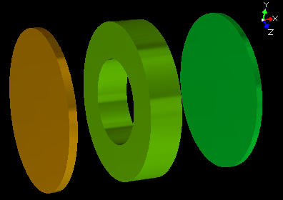
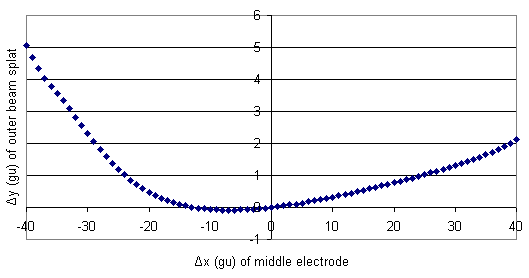
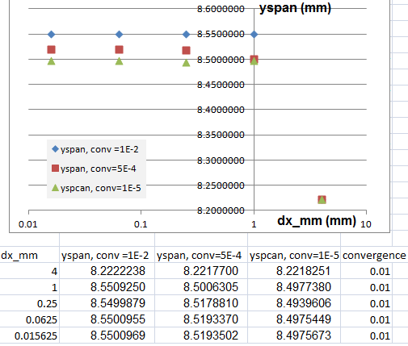

Purpose
This is a simple example of doing geometry optimization. In geometry optimization, we parameterize certain features of the geometry, vary those parameters over some domain, and run the simulation for each variation. Each variation requires rebuilding PA from a GEM file, refining the PA, and flying ions. This is entirely automated, allowing the examination of a large number of geometries at one time. Geometry optimization is analogous to voltage optimization such as done in Example: Tune, where the voltages are varied over some domain and the trajectories are recalculated for each variation. Voltage optimization is easier than geometry optimization though since voltages can be rapidly changed via fast adjusting, but geometry changes generally require rebuilding the potential array.
Similar techniques can also be used to evaluate how changes to PA mesh size and Refine convergence objective affect trajectories (mesh_size.iob).
Files in this demo:
- README.html - Description of the demo.
- tune.iob - SIMION workbench. contains tune.fly, tune.pa0, and tune.lua.
- tune.gem - SIMION geometry file used to create tune.pa#. This uses a global variable.
- tune.con - SIMION contour plotting definitions.
- tune.lua - SIMION user program.
- tune.fly - SIMION particle definitions.
- tune.pa? - SIMION potential array files. These are generated from tune.gem.
- output\results.csv - Summary results generated by tune. This is the results you analyze.
- output\results.html - Similar to results.csv but with screenshots (*.png images).
- mesh_size.iob - example of calculating particles for various PA grid unit sizes and Refine convergence levels
to determine their effect on accuracy
- mesh_size.gem - geometry definition, generating mesh_size.pa (or mesh_size.pa#), parameterized by mesh_size.lua.
- mesh_size.lua - workbench user program that automates multiple runs, regenerating and refining the PA for each run.
- mesh_size.fly2 - particle definitions
- gemlib.lua - Lua library used by mesh_size.lua to regenerate PA instance from GEM file.
Description: tune.iob
The main purpose of tune.iob is to show in the simplest way possible the general technique of how a series of trajectories can be computed when iterating geometric parameters. The basic technique can be applied to a broad range of different systems. The particular results in this example are intended to be more illustrative than interesting.
In this example, a simple three element fast adjust lens is provided. The voltages on the three electrodes are held fixed, and the position of the middle electrode is varied. We seek to find the optimium axial position of the middle electrode such that the particles splat closest to the axis (y offset of zero). The axial x-offset of the middle electrode is varied over the domain [-40, 40] gu, and the y-offset of the outermost particle splat is recorded for each geometry.
A more complex but more efficient version might implement a binary search (like in the "tune" example) or a simplex optimization scheme.

Figure: Geometry tune.pa# using parameterization of x-offset = 0 gu.
Usage: tune.iob
The program can be run as follows.
- 1. View tune.iob. (Click View on main screen and select the tune.iob file.)
- 2. You may be asked to refine (confirm that and press Refine).
- 3. Click Fly'm. You will see the center electrode slowing moving on the screen and trajectories calculated at each position. Details on refining are also displayed in the Log window. A summary of results are saved to the file output\results.csv, which can be viewed in a program such as Excel or a text editor, as well as to an HTML file (output\results.html), which contains screenshots and can be viewed in a web browser.
Results
The below graph was generated by plotting the data in results.csv in Excel. Note that there are actually two optimium geometries (Δx = 0 and Δx = -12.6 gu).

Figure: SIMION Geometry optimization results (from results.csv).
Automating runs via the SIMION 8.1 "flym" segment
The series of runs is automated in tune.lua via a "flym" segment, which is a new segment type added
in SIMION 8.1.0.40.
See "Workbench Program Extensions in SIMION 8.1"
(workbench_program_extensions
in the supplemental documentation (Help menu) for details. This segment invokes the run() function
each time it wants to perform a trajectory calculation run. However, prior to invoking run(),
it creates a new PA# file for a different parameterization of the geometry and refines it. Roughly the code resembles
function segment.flym()
for dx=-40, 40, 2 do
. . . prepare PA# file using electrode position dx . . .
. . . refine the PA# file . . .
run()
end
end
Previous versions of this geometry_optimization example, when the flym segment did not exist yet, invoked runs from a batch mode program by calling the "fly" batch mode command:
simion.command("fly tune.iob")
This is still doable, but the "flym" segment has the advantage that the workbench (IOB) is not constantly being loaded/unloaded on each run but stays visible on the screen. Furthermore, the flym segment allows all the Lua code to exist in a single workbench user program file (rather than in separate batch mode program and workbench user program files). Copies of the old programs are in the "old" subdirectory in case you still have need for the old approach.
Automatic Screenshots
This example saves a screenshot of at the end of each re-run. This is done via
the call to simion.print_screen() in tune.lua. The print
output format is set to "png" to generate a PNG image file:
simion.printer.type = 'png' -- 'bmp', 'png', 'jpg' simion.printer.filename = 'output/result_' .. dx .. '.png' simion.print_screen()
For convenience, this example also writes an HTML file (output\results.html) referencing these PNG files that can be viewed in a web browser.
Batch Mode Commands
The flym segment may make use of the commands described in the SIMION Command Line API appendix of the SIMION 8.0/8.1 user manual. The SIMION 8.1 "PA" and "workbench" Lua APIs are also useful (simion.pas and simion.wb).
SIMION 8.0 Historical Notes
In SIMION 8.0, the geometry optimization was performed in non-GUI batch mode rather than (as in 8.1) GUI mode. The series of runs was automated via a batch mode program calling SIMION batch commands rather than via the SIMION 8.1 "flym" segment calling the Lua PA API. Copies of the old program files are in old\tune80.lua and old\geometry_optimize80.lua for historical reference.
Mesh Size Optimization Example (mesh_size.iob)
The PA grid unit size and Refine convergence objectives have significant effects on accuracy. However, increasing the mesh resolution or reducing the convergence objective can greatly increase calculation time. Therefore it can be useful to examine to what extent these parameters have on the final calculation results, such as particle splat points. Moreover, it can be convenient to automate this process. The "mesh_size.iob" example does a series of Fly'ms, using different PA grid units sizes and Refine convergence objectives for each run. Results from each run (beam size at the target) are recorded as a function of the PA parameters. To use this example, load "mesh_size.iob" and click Fly'm. The final results printed in the Log window are copied below:
run# yspan dx_mm dy_mm convergence enhanced runtime 1 8.2222237991066 4 4 0.01 nil 1 2 8.2217699850365 4 4 0.0005 nil 0 3 8.221825056302 4 4 1e-005 nil 0 4 8.3238032386349 4 1 0.01 nil 0 5 8.3064650841398 4 1 0.0005 nil 0 6 8.3060483583692 4 1 1e-005 nil 0 7 8.4003537773572 1 4 0.01 nil 0 8 8.420502339586 1 4 0.0005 nil 0 9 8.4205916555168 1 4 1e-005 nil 1 10 8.5509250201713 1 1 0.01 nil 0 11 8.500630528163 1 1 0.0005 nil 0 12 8.49773801832 1 1 1e-005 nil 1 13 8.631322650572 1 0.25 0.01 nil 0 14 8.539061155029 1 0.25 0.0005 nil 1 15 8.4949834586976 1 0.25 1e-005 nil 1 16 8.6318021242456 0.25 1 0.01 nil 0 17 8.5520056033724 0.25 1 0.0005 nil 1 18 8.4978259150743 0.25 1 1e-005 nil 0 19 8.5499879348047 0.25 0.25 0.01 nil 1 20 8.5178810473227 0.25 0.25 0.0005 nil 0 21 8.4939605502857 0.25 0.25 1e-005 nil 1 22 8.6377484646629 0.25 0.0625 0.01 nil 1 23 8.5444712294489 0.25 0.0625 0.0005 nil 1 24 8.5041955003087 0.25 0.0625 1e-005 nil 2 25 8.6374792934492 0.0625 0.25 0.01 nil 1 26 8.553342394526 0.0625 0.25 0.0005 nil 1 27 8.505846068974 0.0625 0.25 1e-005 nil 3 28 8.550095450739 0.0625 0.0625 0.01 nil 1 29 8.5193369937174 0.0625 0.0625 0.0005 nil 2 30 8.4975448944842 0.0625 0.0625 1e-005 nil 2 31 8.637649753736 0.0625 0.015625 0.01 nil 3 32 8.5449015916595 0.0625 0.015625 0.0005 nil 2 33 8.503953946875 0.0625 0.015625 1e-005 nil 11 34 8.6375140394726 0.015625 0.0625 0.01 nil 2 35 8.5537488903129 0.015625 0.0625 0.0005 nil 3 36 8.5053250086948 0.015625 0.0625 1e-005 nil 11 37 8.550096877436 0.015625 0.015625 0.01 nil 4 38 8.5193502440125 0.015625 0.015625 0.0005 nil 7 39 8.4975673158366 0.015625 0.015625 1e-005 nil 28 40 8.2222237991066 4 4 0.01 true 1 41 8.2217699850365 4 4 0.0005 true 1 42 8.221825056302 4 4 1e-005 true 1
The above results are interpreted as follows.
yspan is the beam diameter at the target.
This provides a useful measure of how changes to the PA mesh affect particle trajectories.
dx_mm and dy_mm are the PA grid unit sizes in mm.
Both square and rectangular grid cells are tested.
convergence is the Refine convergence objective used.
enhanced is true if surface enhancement is enabled.
runtime is the number of seconds that the given run took to calculate.
We see above that the results are converging to about 8.497 in the third decimal place.
Rectangular grid cells don't help in this example,
not that we'd expect them to help here
(actually, they hurt, particularly at larger convergence objectives).
Results deviate significantly at dx_mm = 4 since electrode surfaces don't align to grid units.
Using surface enhancement should mitigate field errors from non-alignment of electrodes surfaces,
and the final runs try that (enhanced=true), but trajectory accuracy actually does not improve here
because particles are starting and stopping on electrode surfaces, and SIMION Fly'm (unlike Refine)
presently does not (but will in the future) adjust fields for surface enhancement in the regions within one grid unit
away from electrode surfaces.
If, however, we were to start particles away from electrode surfaces (e.g. x=8 mm)
and perfectly align the target electrode surface to grid units (e.g. x = 96 mm),
then surface enhacement does improve trajectory accuracy.

Figure: Beam diameter yspan (mm) v.s. PA cell size dx_mm (mm) for three convergence objectives (1E-2, 5E-4, and 1E-5).
Further Directions
Combined geometry and voltage optimization: It is possible to combine geometry optimization (for electrodes shapes and sizes and PA mesh resolution) and voltage optimization into the same simulation. In this case, we would normally have the outer loop iterate over the geometry and the inner loop iterate over the voltages (in order to avoid slow refines in the inner loop). See Example(tune) for details on voltage optimization, which can be merged into this example.
Changes / History
- 2012-09-04 - set simion.printer.scale in tune.lua.
- 2012-08-02 - add new mesh_size.iob sub-example: evaluating trajectory changes under many combinations of PA grid unit size and Refine convergence objective.
- 2011-11-29 - update to use SIMION 8.1.0.40 flym, initialize_run, and terminate_run segments.
- 2009-02 - add 8.1 GUI mode and screenshot features.
- 2009-02 - utilize regular GEM file with macros rather than building from string (suggested by Bud Buttrill).
- 2006-08 - D.Manura, initial version. Geometry based on the "tune" example.